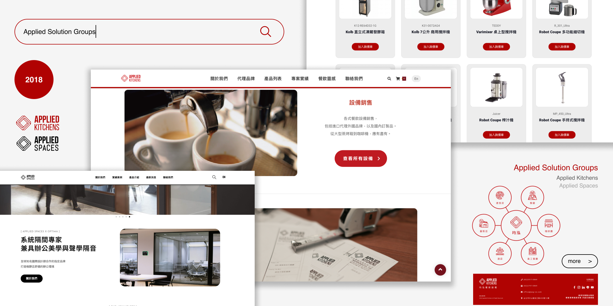

Applied Solution Group
Website Redesign
Sep 2024 - Dec 2024
均泓國際實業以商業廚房設計及玻璃隔間設計為主要業務，並透過兩個網站呈現公司不同面向的服務內容。然而，原有網站在視覺風格與資訊架構上缺乏整體規劃，尤其是廚房設計網站相對老舊，版面與內容未能有效傳達品牌專業度與服務價值，亦影響使用者瀏覽與理解效率。
因此，本專案以重新設計廚房設計網站為出發點，從品牌視覺、資訊架構與使用流程進行全面優化，提升整體使用體驗與商業轉換效益。同時，延伸設計策略至玻璃隔間網站，透過一致的視覺語言與設計系統，整合公司對外形象，強化在不同業務面向下的整體識別與專業印象。

Problem & Goal
觀察並分析原有廚房網站，發現缺乏一致的品牌視覺語言，且資訊過多導致首頁過長，影響重點傳達與使用體驗。重新梳理網站資訊架構與導覽邏輯，減少重複入口並提升使用者在瀏覽與操作上的清晰度。
官網缺乏一致的視覺語言與設計規範，削弱品牌整體識別
建立一致且符合品牌定位的視覺系統，提升整體識別性

導覽結構存在重複與不必要的操作路徑，增加使用者決策成本
依據資訊架構與使用情境，優化導覽結構與操作路徑
首頁資訊層級不明確，未能有效引導使用者理解核心服務
明確呈現核心服務內容，提升首頁資訊傳達效率
Process
Initial Design Exploration
以公司LOGO的菱形元素作為第一版設計方向，同時重新規劃網站 Sitemap。依照內容層級優化首頁資訊架構，並以產品在商業廚房中的使用流程重新規劃設備分類及順序，提升使用者瀏覽效率與理解度。

Constraint Alignment
在與網站開發團隊溝通後，發現原設計中的菱形切版在開發成本上超出預算限制。並與上級溝通需求，參考提供的同行公司網站，再次對焦方向、重新調整設計策略，提出更具可行性且符合公司需求的方案。

Responsive Optimization
優化行動版版面比例與資訊配置，將桌機版的橫向分布轉為集中且置中的呈現方式，提升關鍵內容的可見性與閱讀效率，強化整體瀏覽體驗。

Visual System Implementation
將建立的視覺語言延伸應用至 Hero Carousel 與玻璃隔間網站，在維持各網站Primary Color差異的前提下，統一字體、元件樣式與版面規則，建立一致且具彈性的視覺系統，提升整體對外形象的一致性。

Final Solution
簡約明瞭的公司網站，以精煉且有力的首頁快速傳達公司核心與服務價值，進一步提升公司形象傳播與商業轉化成效。
🔗 Applied Kitchens 🔗 Applied SpacesReflection
在此網站重新設計專案中，我最大的收穫是理解到設計決策需要在理想與實務之間取得平衡。
初期提出的視覺方向雖然能強化公司形象識別，但在實際開發評估中，部分設計因預算限制難以落地，並且公司網站的觸及者多為中年及以上的使用者，簡單明瞭的設計也更契合公司形象。這讓我更深刻的體會設計不僅是美感呈現，更需要實作可行性與同理使用者。
此外，透過與工程團隊的多次溝通與調整，我更加體會到設計與工程之間的協作關係。在反覆討論與取捨的過程中，逐步找到兼顧視覺設計與開發效率的解法，這也讓最終成果更貼近實際需求。
回顧此專案，若能再優化，我會在前期投入更多時間於使用者行為與內容架構的驗證，而非僅從既有內容進行重整，以進一步提升整體使用體驗與資訊傳達的清晰度。同時也讓我更意識到，清晰的資訊架構與操作路徑，對於降低使用者認知負荷與提升網站可用性具有關鍵影響。